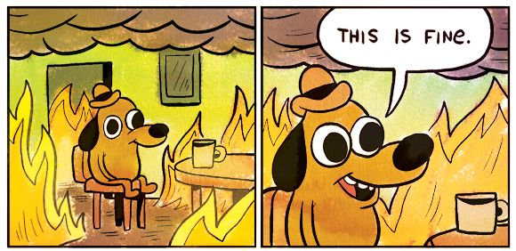
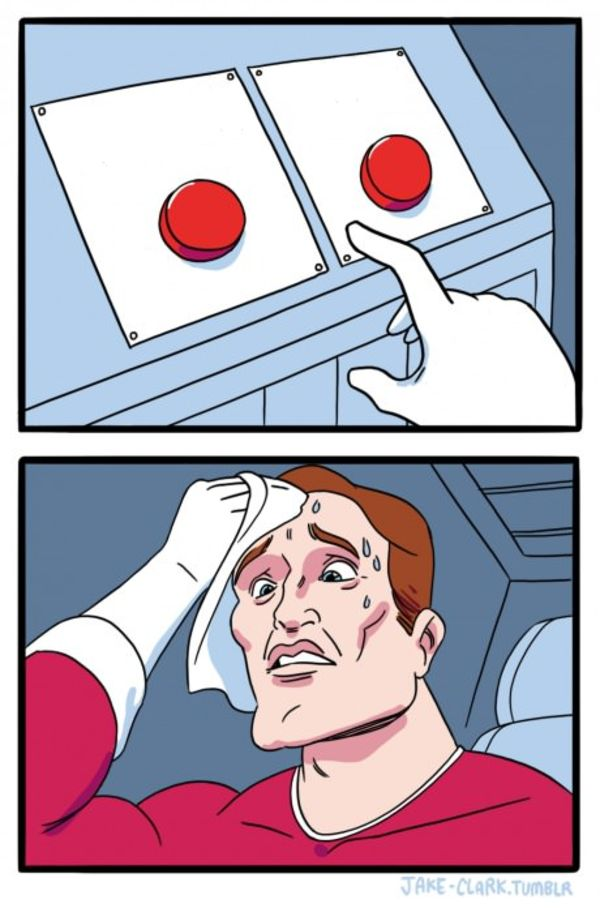
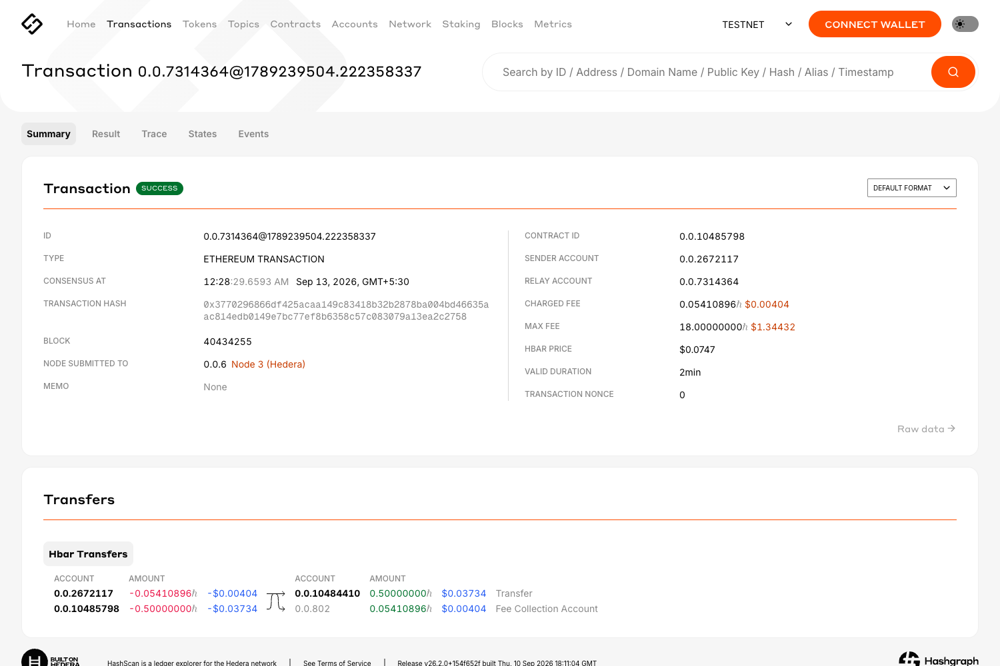
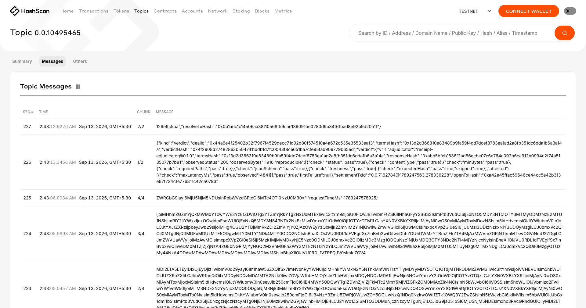

<!doctype html>
<html lang="en">
<head>
<meta charset="utf-8">
<title>Receipt demo</title>
<link rel="preconnect" href="https://fonts.googleapis.com">
<link rel="preconnect" href="https://fonts.gstatic.com" crossorigin>
<link href="https://fonts.googleapis.com/css2?family=Archivo:wght@400;500;600;700;800&family=JetBrains+Mono:wght@400;500;700&display=swap" rel="stylesheet">
<style>
  /*
   * Rules for this film, learned the hard way:
   *   one idea per screen, and nothing on screen that does not serve it;
   *   a terminal looks like a terminal, with a window and a prompt, and shows
   *     six legible lines rather than twenty-five unreadable ones;
   *   every real value gets a plain-English label beside it;
   *   pictures carry the argument, words caption it.
   *
   * Nothing animates by CSS. seek(ms) computes every pixel from the clock, so
   * the renderer can capture frames in any order and skip the still ones.
   */
  :root{
    --paper:#faf7f2; --ink:#191d2b; --muted:#6b7486; --rule:#e2d9cc; --hair:#efe9e0;
    --carbon:#2f3aa8; --carbon-soft:#eceefb;
    --held:#c2740b; --held-soft:#fdf3e2;
    --paid:#13894f; --paid-soft:#e8f6ee;
    --returned:#cf2f24; --returned-soft:#fdeceb;
    --tty-bg:#171a23; --tty-bar:#262b38; --tty-fg:#e6eaf2; --tty-dim:#8892a6;
    --gutter:132px;
  }
  *{box-sizing:border-box; margin:0; padding:0}
  html,body{height:100%; overflow:hidden}
  body{
    background:var(--paper); color:var(--ink);
    font:400 17px/1.5 Archivo, system-ui, sans-serif;
    font-variant-numeric:tabular-nums;
    -webkit-font-smoothing:antialiased;
  }
  .mono{font-family:"JetBrains Mono", ui-monospace, Menlo, monospace}

  #stage{position:relative; width:100vw; height:100vh}
  .scene{position:absolute; inset:0; display:none; flex-direction:column; justify-content:center;
         padding:64px 84px 64px var(--gutter)}
  .scene.on{display:flex}
  .inner{will-change:transform}

  /* margin rail: where you are, and what the money is doing */
  #rail{position:absolute; left:0; top:0; bottom:0; width:var(--gutter); z-index:4;
        padding:64px 0 64px 40px; display:flex; flex-direction:column; justify-content:space-between}
  #rail:before{content:''; position:absolute; left:24px; top:0; bottom:0; border-left:1px dotted var(--rule)}
  #rail .num{font-size:14px; font-weight:700; letter-spacing:.06em; color:var(--muted); font-family:"JetBrains Mono",monospace}
  #rail .nm{font-size:12.5px; color:var(--muted); margin-top:6px}
  #rail .clock{font-size:12.5px; color:var(--muted); font-family:"JetBrains Mono",monospace}
  .chip{display:inline-block; max-width:80px; margin-bottom:14px; padding:5px 8px 4px;
        font-size:11px; font-weight:700; letter-spacing:.08em; line-height:1.35;
        border:1.5px solid currentColor; transform-origin:left center; font-family:"JetBrains Mono",monospace}
  .chip.open{color:var(--held)} .chip.rel{color:var(--paid)} .chip.ref{color:var(--returned)}

  h1{font-size:74px; font-weight:800; letter-spacing:.26em; text-indent:.28em; line-height:1; font-family:"JetBrains Mono",monospace}
  h2{font-size:47px; font-weight:800; line-height:1.14; max-width:24ch; letter-spacing:-.028em}
  h2.wide{max-width:34ch}
  h3{font-size:31px; font-weight:700; line-height:1.22; max-width:40ch; letter-spacing:-.02em}
  .lede{color:var(--muted); font-size:21px; margin-top:16px; max-width:60ch; line-height:1.5}

  /* comic strip: three panels, a picture each */
  .strip{display:grid; grid-template-columns:1fr 1fr 1fr; gap:22px; margin-top:30px; max-width:1520px}
  .panel{border:2px solid var(--ink); border-radius:6px; padding:28px 24px; background:#fff;
         display:flex; flex-direction:column; align-items:center; justify-content:center;
         text-align:center; min-height:300px}
  /* one art height for every panel, so the captions below them line up
     whether the art is emoji or a photograph */
  .panel .art{height:210px; margin-bottom:16px; display:flex; align-items:center;
              justify-content:center; overflow:hidden}
  .panel .figure{font:800 96px/1 Archivo,sans-serif; letter-spacing:-.04em; color:var(--ink)}
  .panel .blob{font:500 22px/1.5 "JetBrains Mono",monospace; color:#ff9d90; background:var(--tty-bg);
               padding:20px 22px; border-radius:6px; text-align:left}
  .panel .art img{width:100%; height:100%; object-fit:contain; border-radius:4px}
  .panel .say{font-size:21px; font-weight:600; line-height:1.35}
  .panel .note{color:var(--muted); font-size:16px; margin-top:10px; line-height:1.4}
  .panel .code{font-family:"JetBrains Mono",monospace; font-size:15px; background:var(--tty-bg);
               color:#ff9d90; padding:8px 12px; border-radius:4px; margin-top:12px; word-break:break-all}
  .panel.bad{border-color:var(--returned)}

  /* meme templates, captioned in the film's own type */
  .meme{position:relative; border:2px solid var(--ink); border-radius:6px; overflow:hidden; background:#fff}
  .meme img{display:block; width:100%; height:auto}
  .meme .cap{position:absolute; display:flex; align-items:center; justify-content:center;
             text-align:center; font-weight:700; line-height:1.22; color:#141414; padding:0 10px}
  .meme .strike{color:var(--returned)}
  /* a plate, so a caption over busy artwork still reads */
  .meme .cap.plate{background:rgba(255,255,255,.94); border-radius:5px; box-shadow:0 1px 3px rgba(0,0,0,.15)}

  /* a terminal that looks like a terminal */
  .tty{background:var(--tty-bg); border-radius:10px; overflow:hidden; max-width:1480px;
       box-shadow:0 18px 40px rgba(25,29,43,.18)}
  .tty .bar{background:var(--tty-bar); padding:12px 16px; display:flex; align-items:center; gap:9px}
  .tty .bar i{width:12px; height:12px; border-radius:50%; display:block}
  .tty .bar i:nth-child(1){background:#ff5f57} .tty .bar i:nth-child(2){background:#febc2e}
  .tty .bar i:nth-child(3){background:#28c840}
  .tty .bar span{color:var(--tty-dim); font-size:14px; margin-left:10px; font-family:"JetBrains Mono",monospace}
  .tty .body{padding:24px 28px 28px; font-family:"JetBrains Mono",monospace; color:var(--tty-fg)}
  .tty .cmd{font-size:26px; font-weight:500; margin-bottom:18px}
  .tty .cmd .p{color:#5ed99b; margin-right:10px}
  .cur{display:inline-block; width:11px; height:22px; background:var(--tty-fg); vertical-align:-3px}
  .tty .out{display:grid; grid-template-columns:300px 1fr; gap:22px; align-items:baseline;
            padding:7px 0; font-size:21px}
  .tty .out .what{color:var(--tty-dim); font-size:18px; font-family:Archivo,sans-serif}
  .tty .out .val{font-weight:500; word-break:break-word}
  .tty .out .val.g{color:#5ed99b} .tty .out .val.r{color:#ff8d80} .tty .out .val.y{color:#f2c069}
  .tty .out .val.big{font-size:28px; font-weight:700}
  .tty .rule{height:1px; background:#2d3340; margin:14px 0}

  /* where the money is */
  .flow3{display:grid; grid-template-columns:1fr 90px 1fr 90px 1fr;
         align-items:center; margin-top:36px; max-width:1300px}
  /* the coin travels on its own lane under the boxes, so it never sits on a label */
  .track{position:relative; max-width:1300px; height:52px; margin-top:6px}
  .track:before{content:''; position:absolute; left:6%; right:6%; top:24px; height:3px;
                background:var(--rule); border-radius:2px}
  .node{border:2px solid var(--rule); border-radius:8px; background:#fff; padding:34px 18px; text-align:center}
  .node.hot{border-color:var(--held); background:var(--held-soft)}
  .node .nm{font-weight:800; font-size:27px; letter-spacing:.02em}
  .node .sub{color:var(--muted); font-size:15.5px; margin-top:4px}
  .wire{height:3px; background:var(--rule); border-radius:2px}
  .coin{position:absolute; top:0; transform:translateX(-50%); width:48px; height:48px;
        border-radius:50%; background:var(--held); color:#fff; display:flex;
        align-items:center; justify-content:center; font:700 25px Archivo,sans-serif;
        box-shadow:0 4px 12px rgba(194,116,11,.36)}
  .flowcap{margin-top:26px; font-size:22px; font-weight:600; min-height:32px}

  /* big numbers */
  .nums{display:flex; gap:74px; margin-top:34px; align-items:flex-start}
  .num .v{font-size:104px; font-weight:700; line-height:.95; letter-spacing:-.04em; font-family:"JetBrains Mono",monospace}
  .num .k{color:var(--muted); font-size:17px; margin-top:10px; max-width:26ch}
  .num.ok .v{color:var(--paid)} .num.no .v{color:var(--returned)}

  /* two things that agree */
  .twin{display:grid; grid-template-columns:1fr 1fr; gap:26px; margin-top:28px; max-width:1480px}
  .side{border:2px solid var(--rule); border-radius:8px; background:#fff; padding:22px 24px}
  .side .who{font-weight:700; font-size:21px}
  .side .meta{color:var(--muted); font-size:16px; margin-top:3px}
  .side .hash{font-family:"JetBrains Mono",monospace; font-size:16px; word-break:break-all; margin-top:16px;
              background:var(--paid-soft); color:var(--paid); padding:10px 12px; border-radius:5px; font-weight:600}
  .verdictline{margin-top:22px; font-size:26px; font-weight:700; color:var(--paid)}

  /* the checklist */
  .checks{margin-top:20px; max-width:1500px}
  .rowwrap{border-bottom:1px dotted var(--hair); padding:8px 0}
  .checks .row{display:grid; grid-template-columns:42px 1fr 230px 118px; align-items:baseline; gap:14px}
  .checks .mk{font-weight:700; font-size:22px}
  .checks .say{font-size:21px; font-weight:500}
  .checks .nm{font-size:17px; color:var(--muted); font-family:"JetBrains Mono",monospace}
  .checks .vd{font-weight:700; font-size:20px; text-align:right; font-family:"JetBrains Mono",monospace}
  .checks .dt{color:var(--returned); font-size:16px; margin:4px 0 0 56px; font-family:"JetBrains Mono",monospace;
              overflow:hidden; white-space:nowrap; text-overflow:ellipsis; max-width:104ch}
  .checks .row.p .mk,.checks .row.p .vd{color:var(--paid)}
  .checks .row.f .mk,.checks .row.f .vd{color:var(--returned)}
  .checks .row.att .mk,.checks .row.att .vd{color:var(--muted)}
  .checks .row.att .say{color:var(--muted)}
  .stamp{display:inline-block; padding:10px 22px 9px; border:3px solid currentColor; border-radius:3px;
         font-size:24px; font-weight:700; letter-spacing:.14em; text-transform:uppercase;
         transform-origin:center; font-family:"JetBrains Mono",monospace}
  .stamp.paid{color:var(--paid); background:var(--paid-soft)}
  .stamp.returned{color:var(--returned); background:var(--returned-soft)}

  /* architecture, as the path the money and the proof actually take */
  .steps{display:grid; grid-template-columns:repeat(7, 1fr); gap:11px; margin-top:30px; max-width:1640px}
  .step{border:2px solid var(--rule); border-radius:8px; background:#fff; padding:16px 14px;
        display:flex; flex-direction:column}
  .step .sn{font:800 15px "JetBrains Mono",monospace; color:var(--carbon)}
  .step .snm{font-weight:800; font-size:18px; margin-top:6px; line-height:1.2}
  .step .ssub{color:var(--muted); font-size:14px; margin-top:7px; line-height:1.35}
  .step .stech{margin-top:auto; padding-top:11px; font-size:13px; font-weight:700; color:var(--carbon)}

  /* the evidence table */
  table.ev{border-collapse:collapse; width:100%; max-width:1620px; margin-top:24px}
  table.ev th{text-align:left; font-size:14px; font-weight:700; letter-spacing:.1em;
              text-transform:uppercase; color:var(--muted); padding:0 20px 12px 0}
  table.ev td{padding:14px 20px 14px 0; border-top:1px dotted var(--hair); font-size:19px;
              vertical-align:top; line-height:1.4}
  table.ev td.who{font-weight:800; font-size:22px; white-space:nowrap; width:200px}
  table.ev td.how{color:var(--carbon); font-weight:600; font-size:17px; white-space:nowrap; width:330px}
  table.ev td.no, table.ev td.who.no{color:var(--muted); font-weight:500}

  /* architecture */
  .arch{display:grid; grid-template-columns:repeat(5, 1fr); gap:16px; margin-top:34px; max-width:1560px}
  .arch{position:relative}
  .abox{border:2px solid var(--rule); border-radius:8px; background:#fff; padding:18px 16px;
        text-align:center; display:flex; flex-direction:column; position:relative}
  /* a chevron in each gap, so the order is not left to guesswork */
  .abox + .abox:before{content:'›'; position:absolute; left:-19px; top:50%; transform:translateY(-50%);
                       color:var(--rule); font-size:30px; font-weight:700; line-height:1}
  .abox .nm{font-weight:800; font-size:21px}
  .abox .sub{color:var(--muted); font-size:14.5px; margin-top:6px; line-height:1.35}
  .abox .tech{margin-top:auto; padding-top:12px; font-size:13px; font-weight:700; color:var(--carbon)}
  .archnote{margin-top:26px; font-size:20px; max-width:96ch; line-height:1.45}

  /* Scenes that ARE a screen: terminal, the app, the explorer. These fill the
     frame edge to edge like a screen recording, rather than sitting on a slide
     inside a window. The slides explain; these show. */
  .scene.bleed{padding:0}
  /* .inner carries will-change:transform, which makes it the containing block
     for absolutely positioned children. Without a size of its own the screen
     inside it collapses to nothing and only the overflowing title bar paints. */
  .scene.bleed .inner{position:absolute; inset:0}
  body[data-bleed="1"] #rail{display:none}

  .screen{position:absolute; inset:0; display:flex; flex-direction:column}
  .screen .chrome{flex:0 0 70px; display:flex; align-items:center; gap:10px; padding:0 22px}
  .screen .chrome i{width:13px; height:13px; border-radius:50%; display:block}
  .screen .chrome .addr{flex:1; margin-left:18px; border-radius:9px; padding:10px 18px;
                        font:500 18px "JetBrains Mono",monospace;
                        white-space:nowrap; overflow:hidden; text-overflow:ellipsis}
  .screen .chrome .tag{font:700 14px Archivo,sans-serif; letter-spacing:.14em; padding-left:16px}

  /* a browser, maximised */
  .screen.web .chrome{background:#e8e3db}
  .screen.web .chrome .addr{background:#fff; border:1px solid #d6d0c4; color:#3a4154}
  .screen.web .chrome .tag{color:var(--returned)}
  .screen.web .viewport{flex:1; position:relative; background:#fff; overflow:hidden}
  .screen.web .viewport img{position:absolute; inset:0; width:100%; height:100%;
                            object-fit:cover; object-position:top center; transform-origin:center center}

  /* a terminal, maximised */
  .screen.term{background:var(--tty-bg)}
  .screen.term .chrome{background:var(--tty-bar)}
  .screen.term .chrome .addr{background:transparent; border:none; color:var(--tty-dim); margin-left:14px}
  .screen.term .body{flex:1; padding:54px 86px; font-family:"JetBrains Mono",monospace; color:var(--tty-fg)}
  .screen.term .cmd{font-size:38px; font-weight:500; margin-bottom:34px}
  .screen.term .cmd .p{color:#5ed99b; margin-right:14px}
  .screen.term .cur{width:15px; height:32px; vertical-align:-4px}
  .screen.term .out{display:grid; grid-template-columns:400px 1fr; gap:30px; align-items:baseline;
                    padding:11px 0; font-size:30px}
  .screen.term .out .what{color:var(--tty-dim); font-size:24px; font-family:Archivo,sans-serif}
  .screen.term .out .val{font-weight:500; word-break:break-word}
  .screen.term .out .val.g{color:#5ed99b} .screen.term .out .val.r{color:#ff8d80}
  .screen.term .out .val.y{color:#f2c069}
  .screen.term .out .val.big{font-size:40px; font-weight:700}
  .screen.term .rule{height:1px; background:#2d3340; margin:22px 0}
  .screen .livecap{position:absolute; left:0; right:0; bottom:0; padding:22px 44px;
                   background:rgba(23,26,35,.88); color:#fff; font-size:24px; font-weight:600}
  .screen .livecap b{color:#5ed99b}

  /* the live app, shown as a browser window at the address it really runs on */
  .scene.full{padding:34px 40px; justify-content:center}
  .browser{width:1560px; margin:0 auto; border-radius:12px; overflow:hidden;
           border:1px solid #cfc9bd; box-shadow:0 22px 54px rgba(25,29,43,.20)}
  .chrome{height:54px; background:#e8e3db; display:flex; align-items:center; gap:9px; padding:0 16px}
  .chrome i{width:12px; height:12px; border-radius:50%; display:block}
  .chrome .addr{flex:1; margin-left:16px; background:#fff; border:1px solid #d6d0c4; border-radius:8px;
                padding:8px 16px; font:500 16px "JetBrains Mono",monospace; color:#3a4154;
                white-space:nowrap; overflow:hidden; text-overflow:ellipsis}
  .chrome .livedot{font:700 13px Archivo,sans-serif; letter-spacing:.12em; color:var(--returned);
                   padding-left:14px}
  .viewport{position:relative; height:766px; background:#fff}
  .viewport img{position:absolute; inset:0; width:100%; height:100%; object-fit:cover; object-position:top center}
  .livecap{margin:18px auto 0; width:1560px; font-size:21px; font-weight:600; min-height:30px}

  /* countdown to the demo */
  #countdown{position:absolute; top:34px; right:44px; z-index:7; display:flex; align-items:center; gap:10px;
             border:1.5px solid var(--carbon); border-radius:999px; padding:9px 18px 8px;
             font:700 15px "JetBrains Mono",monospace; color:var(--carbon); letter-spacing:.04em;
             background:var(--carbon-soft)}
  #countdown b{font-weight:700}

  /* real captures */
  .shot{position:relative; width:1180px; height:700px}
  .shot .frame{position:absolute; inset:0; overflow:hidden; border-radius:8px; border:1px solid var(--rule);
               box-shadow:0 14px 34px rgba(25,29,43,.14)}
  .shot img{position:absolute; inset:0; width:100%; height:100%; object-fit:contain;
            object-position:top center; transform-origin:center center}
  .shot .cap{position:absolute; left:0; right:0; bottom:-46px; font-size:19px; color:var(--muted)}
  .shot .cap b{color:var(--ink); font-weight:700}

  .bullets{list-style:none; margin-top:22px; display:grid; gap:14px; max-width:76ch}
  .bullets li{display:flex; gap:14px; font-size:21px; line-height:1.4}
  .bullets .m{color:var(--carbon); font-weight:700}

  #bar{position:absolute; left:0; bottom:0; height:3px; background:var(--carbon); width:0; z-index:6}
</style>
</head>
<body>
<script src="demo-data.js"></script>
<script src="run-frames.js"></script>
<div id="stage"></div>
<div id="rail"><div><div class="num"></div><div class="nm"></div></div>
<div><div class="state"></div><div class="clock"></div></div></div>
<div id="countdown"></div>
<div id="bar"></div>

<script>
const D = window.DEMO_DATA || {};
const esc = (s) => String(s ?? '').replace(/[&<>]/g, (c) => ({'&':'&amp;','<':'&lt;','>':'&gt;'}[c]));
const clamp = (v, a, b) => Math.max(a, Math.min(b, v));
const easeOut = (x) => 1 - Math.pow(1 - clamp(x, 0, 1), 3);
const easeBack = (x) => { const u = clamp(x, 0, 1), c = 1.7;
  return 1 + (c + 1) * Math.pow(u - 1, 3) + c * Math.pow(u - 1, 2); };
const easeInOut = (x) => { const u = clamp(x, 0, 1);
  return u < 0.5 ? 4 * u * u * u : 1 - Math.pow(-2 * u + 2, 3) / 2; };


/** Pull a real line out of a captured transcript, so nothing here is retyped. */
function realLine(key, re) {
  const hit = (D[key] ?? '').split('\n').find((l) => re.test(l));
  return hit ? hit.trim() : '';
}
function realValue(key, re, strip) {
  return realLine(key, re).replace(strip, '').trim();
}

/** A terminal, filling the screen, the way a screen recording of one would. */
function tty(title, cmd, rows) {
  const out = rows.map((r, i) => r[0] === '-'
    ? `<div class="rule" data-line="${i}"></div>`
    : `<div class="out" data-line="${i}"><span class="what">${r[0]}</span>` +
      `<span class="val ${r[2] ?? ''}">${esc(r[1])}</span></div>`).join('');
  return `<div class="screen term">
    <div class="chrome"><i style="background:#ff5f57"></i><i style="background:#febc2e"></i>` +
    `<i style="background:#28c840"></i><div class="addr">${esc(title)}</div></div>
    <div class="body">
      <p class="cmd"><span class="p">$</span><span data-cmd="${esc(cmd)}"></span><span class="cur"></span></p>
      ${out}
    </div>
  </div>`;
}

const FLOW = `
  <div class="flow3">
    <div class="node"><div class="nm">BUYER</div><div class="sub">writes the checks, then pays</div></div>
    <div class="wire"></div>
    <div class="node hot"><div class="nm">ESCROW</div><div class="sub">holds it while the checks run</div></div>
    <div class="wire"></div>
    <div class="node"><div class="nm">SELLER</div><div class="sub">sends the data</div></div>
  </div>
  <div class="track"><div class="coin" data-coin>&#8462;</div></div>`;

/** What each check means, for someone who has never read the code. */
const MEANS = {
  status: 'Did it answer HTTP 200?',
  contentType: 'Is it actually JSON?',
  minBytes: 'Is the body not empty?',
  requiredPaths: 'Does it contain the fields we asked for?',
  jsonSchema: 'Are the addresses real addresses, and the amounts whole numbers?',
  freshness: 'Is the snapshot recent, not hours old?',
  expectedHash: 'Does it match an exact answer we named?',
  maxLatencyMs: 'How fast did it answer?',
};

function checkRows(v) {
  if (!v) return '<p class="lede">(no verdict captured)</p>';
  const rows = v.reproducible.map((c) => {
    const cls = c.pass ? 'p' : 'f';
    const why = !c.pass && c.detail ? `<p class="dt">${esc(c.detail)}</p>` : '';
    return `<div class="rowwrap" data-reveal><div class="row ${c.skipped ? 'att' : cls}">` +
      `<span class="mk">${c.skipped ? '·' : (c.pass ? '✓' : '✗')}</span>` +
      `<span class="say">${esc(MEANS[c.check] || c.check)}</span>` +
      `<span class="nm">${esc(c.check)}</span>` +
      `<span class="vd">${c.skipped ? 'not asked' : (c.pass ? 'pass' : 'fail')}</span>` +
      `</div>${why}</div>`;
  });
  const a = v.attested && v.attested[0];
  if (a) rows.push(`<div class="rowwrap" data-reveal><div class="row att">` +
    `<span class="mk">·</span><span class="say">${esc(MEANS[a.check])} ` +
    `<b style="font-weight:600">Our own stopwatch, so it decides nothing.</b></span>` +
    `<span class="nm">${esc(a.check)}</span><span class="vd">${a.observed}ms</span></div></div>`);
  return `<div class="checks">${rows.join('')}</div>`;
}

/** Written by demo/interact.mjs, so it cannot disagree with the directory. */
const RUN_FRAMES = window.RUN_FRAMES ?? 0;
const runFrames = Array.from({ length: RUN_FRAMES }, (_, i) =>
  ``).join('');

const SCENES = [

{ n:'title', dur:6000, enter:'cut', html:`
  <div style="text-align:center; padding-right:50px">
    <div data-in="0" style="color:var(--carbon); line-height:0"><svg width="92" height="92"  xmlns="http://www.w3.org/2000/svg" viewBox="0 0 64 64" role="img" aria-label="Receipt">
  <mask id="rc-film">
    <rect width="64" height="64" fill="#fff"/>
    <path d="M21 31.5 28.5 39 44 23" fill="none" stroke="#000" stroke-width="6"
          stroke-linecap="round" stroke-linejoin="round"/>
  </mask>
  <path fill="currentColor" mask="url(#rc-film)"
        d="M11 5a1 1 0 0 1 1-1h40a1 1 0 0 1 1 1v50.6a1 1 0 0 1-1.6.8L45.5 52l-5.9 4.4a1 1 0 0 1-1.2 0L32.5 52
           l-5.9 4.4a1 1 0 0 1-1.2 0L19.5 52l-5.9 4.4A1 1 0 0 1 11 55.6z"/>
</svg></div>
    <h1 style="margin-top:22px">${'RECEIPT'.split('').map((c, i) =>
      `<span data-in="${260 + i * 68}" style="display:inline-block">${c}</span>`).join('')}</h1>
    <p data-in="900" class="lede" style="margin:22px auto 0; max-width:46ch; color:var(--ink); font-size:26px">
      Pay for an API call. Get your money back automatically if the answer is junk.</p>
  </div>`},

{ n:'the problem', dur:10000, enter:'rise', html:`
  <h2 class="wide">An AI agent pays first, and looks at what it bought second.</h2>
  <div class="strip">
    <div class="panel" data-in="700">
      <div class="art"><div class="figure">50&#162;</div></div>
      <p class="say">The agent pays, up front, for live token data.</p>
      <p class="note">This is how x402 works today. Money first, look later.</p>
    </div>
    <div class="panel bad" data-in="1700">
      <div class="art"><div class="blob">{"error":<br>"upstream rate limited"}</div></div>
      <p class="say">The API answers HTTP 200, with junk.</p>
      <p class="note">A perfectly valid response, carrying nothing.</p>
    </div>
    <div class="panel bad" data-in="2700">
      <div class="art"></div>
      <p class="say">The money is already gone.</p>
      <p class="note">x402 has no refund. There is no dispute step anywhere in it.</p>
    </div>
  </div>`},

{ n:'why not sue', dur:9000, enter:'rise', html:`
  <h2 class="wide">"Just dispute it."</h2>
  <div style="display:grid; grid-template-columns:430px 1fr; gap:52px; align-items:center; margin-top:26px">
    <div class="meme" data-in="500">
      
      <div class="cap plate" style="left:4%; top:5%; width:35%; height:15%; font-size:16px">Post a bond worth more than the payment</div>
      <div class="cap plate" style="left:42%; top:2%; width:36%; height:15%; font-size:16px">Eat the 46 cents and move on</div>
    </div>
    <div>
      <p class="lede" data-in="1500" style="font-size:25px; color:var(--ink); max-width:34ch">
        Nobody arbitrates a <b>46 cent</b> payment. Kleros and UMA both work, and both
        want bonds, gas and days.</p>
      <p class="lede" data-in="2700" style="font-size:22px; max-width:38ch">
        So people appoint a judge instead. The one product that shipped that way does
        <b>five users a day</b>, because nobody could answer who judges, or who pays the judge.</p>
    </div>
  </div>`},

{ n:'so instead', dur:8000, enter:'rise', html:`
  <div style="display:grid; grid-template-columns:640px 1fr; gap:60px; align-items:center">
    <div class="meme" data-in="400">
      
      <div class="cap" style="left:50%; top:4%; width:48%; height:42%; font-size:27px">
        Pay first, then find out what you bought</div>
      <div class="cap" style="left:50%; top:54%; width:48%; height:42%; font-size:27px">
        Say what a good answer is, then pay for it</div>
    </div>
    <div>
      <h2 data-in="1400" style="font-size:44px">That is the entire idea.</h2>
      <p class="lede" data-in="2400" style="font-size:22px; max-width:32ch">
        Everything after this is just making it actually work with real money.</p>
    </div>
  </div>`},

{ n:'the idea', dur:11000, enter:'rise', coin:[[0,14],[2600,14],[4400,50],[8400,50],[11000,86]], html:`
  <h2 class="wide">So nobody judges. The buyer says what "good" means, before paying.</h2>
  ${FLOW}
  <p class="flowcap" data-flowcap></p>`},

{ n:'it works', bleed:true, dur:12000, enter:'push', chip:'open', flipAt:0.72, flipTo:'rel',
  html: tty('buyer', 'pnpm buy honest', [
    ['what it bought', 'live token holdings from The Graph'],
    ['the seller answered', realValue('honest', /seller responded HTTP/, /seller responded\s*/), 'g'],
    ['-', ''],
    ['the verdict', 'PASS, all seven checks', 'g big'],
    ['the money', 'released to the seller', 'g'],
    ['the buyer paid', realValue('honest', /buyer delta/, /buyer delta\s*/), 'y'],
  ])},

{ n:'seven checks', dur:10000, enter:'cut', chip:'open', state:'rel',
  stamp:{at:6400}, html:`
  <h3 style="max-width:56ch">Seven checks decided it, and anyone can re-run all seven.</h3>
  ${checkRows(D.verdicts && D.verdicts.honest)}
  <p style="margin-top:22px" data-stamp><span class="stamp paid">released to seller</span></p>`},

{ n:'junk answer', bleed:true, dur:12000, enter:'push', chip:'open', flipAt:0.72, flipTo:'ref',
  html: tty('buyer', 'pnpm buy garbage', [
    ['the seller answered', realValue('garbage', /seller responded HTTP/, /seller responded\s*/), 'g'],
    ['what came back', realLine('garbage', /^body:/).replace(/^body:\s*/, ''), 'r'],
    ['-', ''],
    ['the verdict', 'FAIL', 'r big'],
    ['first thing wrong', realValue('garbage', /firstFailure/, /firstFailure\s*/), 'r'],
    ['the money', 'refunded to the buyer, in seconds', 'g'],
    ['the buyer paid', realValue('garbage', /buyer delta/, /buyer delta\s*/), 'g'],
  ])},

{ n:'refunded', dur:10000, enter:'cut', chip:'open', state:'ref',
  stamp:{at:6400}, html:`
  <h3 style="max-width:60ch">Nothing was wrong at the HTTP layer. Status passed. The shape of the data is what failed.</h3>
  ${checkRows(D.verdicts && D.verdicts.garbage)}
  <p style="margin-top:22px" data-stamp><span class="stamp returned">returned to buyer</span></p>`},

{ n:'seller says no', bleed:true, dur:10000, enter:'push', chip:'open', flipAt:0.70, flipTo:'ref',
  html: tty('buyer', 'pnpm buy subtle-selfcheck', [
    ['the twist', 'the seller ran the buyer’s own checks on itself, first'],
    ['it saw it would fail', 'its data was an hour stale', 'y'],
    ['-', ''],
    ['the seller answered', realValue('selfcheck', /seller responded HTTP/, /seller responded\s*/), 'y'],
    ['what it said', 'I decline the sale', 'y big'],
    ['the money', 'never left the buyer', 'g'],
  ])},

{ n:'seller vanishes', bleed:true, dur:11000, enter:'push', chip:'open', flipAt:0.74, flipTo:'ref',
  html: tty('a stranger, not the buyer', 'pnpm claim --deal 0x194e3155', [
    ['the seller never answered', 'HTTP 504, no response at all', 'r'],
    ['so no verdict was invented', 'the escrow just stayed open', 'y'],
    ['-', ''],
    ['who unlocked it', 'an unrelated wallet, 0x13DD3C13', 'y'],
    ['where that money could go', 'back to the buyer, and nowhere else', 'g big'],
    ['result', 'deal is now Refunded', 'g'],
  ])},

{ n:'the live app', dur:30000, enter:'cut', session:true, html:`
  <div class="screen web">
    <div class="chrome"><i style="background:#ff5f57"></i><i style="background:#febc2e"></i>
      <i style="background:#28c840"></i><div class="addr" data-addr></div><div class="tag">LIVE</div></div>
    <div class="viewport">${runFrames}</div>
    <p class="livecap" data-livecap></p>
  </div>`},

{ n:'check it yourself', dur:10000, enter:'rise', html:`
  <h2 class="wide">Do not trust our verdicts. Re-run every one of them.</h2>
  <p class="lede" data-in="500" style="font-size:22px; max-width:80ch">
    Every deal published its terms, the raw answer and the verdict to a public Hedera topic.
    This replays all of them from that log, with no help from us.</p>
  <div class="nums">
    <div class="num ok" data-in="1400"><div class="v">28</div><div class="k">verdicts reproduced exactly</div></div>
    <div class="num no" data-in="2200"><div class="v">0</div><div class="k">that did not match</div></div>
    <div class="num" data-in="3000"><div class="v" style="color:var(--muted)">6</div>
      <div class="k">no verdict, because the seller never answered</div></div>
  </div>`},

{ n:'second opinion', dur:11000, enter:'rise', html:`
  <h3 style="max-width:60ch">Written twice, sharing no code. Same answer, same hash.</h3>
  <div class="twin">
    <div class="side" data-in="600">
      <div class="who">The facilitator</div>
      <div class="meta">TypeScript. The one that took the money.</div>
      <div class="hash">0xbf851c854bb38caf7d13d57e95ac3c7c0200752fd972a594cda4a127e49fb7ce</div>
    </div>
    <div class="side" data-in="1600">
      <div class="who">A second checker</div>
      <div class="meta">Python, no dependencies, written from the written spec.</div>
      <div class="hash">0xbf851c854bb38caf7d13d57e95ac3c7c0200752fd972a594cda4a127e49fb7ce</div>
    </div>
  </div>
  <p class="verdictline" data-in="2800">Identical. And it is the hash the escrow recorded on chain.</p>
  <p class="lede" data-in="3600" style="font-size:19px">If the rules were vague these two would disagree. Across twelve test cases they never do.</p>`},

{ n:'the receipts', dur:14000, web:true, enter:'cut', beats:[7000, 14000],
  addrs:['hashscan.io/testnet/transaction/0xbf68e5dc65b6750067f16affef8ee936d0b3d70662d4c5d192a82f1ddcf15c93',
         'hashscan.io/testnet/topic/0.0.10495465/messages'],
  focus:{ 0:{ x:8, y:-26, scale:1.7, at:0.42, over:0.34 },
          1:{ x:-10, y:-8, scale:1.7, at:0.42, over:0.34 } },
  html:`
  <div class="screen web">
    <div class="chrome"><i style="background:#ff5f57"></i><i style="background:#febc2e"></i>
      <i style="background:#28c840"></i><div class="addr" data-addr></div></div>
    <div class="viewport">
      
      
    </div>
    <p class="livecap" data-cap="0"><b>The money moving.</b> Half an HBAR leaving the escrow for the seller.</p>
    <p class="livecap" data-cap="1"><b>The reasoning.</b> Every check result, published, for every deal.</p>
  </div>`},

{ n:'architecture', dur:17000, enter:'rise', revealMs:800, html:`
  <h3 style="max-width:66ch">End to end, and whose technology does each step.</h3>
  <div class="steps">
    <div class="step" data-reveal><div class="sn">1</div><div class="snm">Buyer signs</div><div class="ssub">Seven checks, as EIP-712 terms, before any money moves.</div><div class="stech">x402</div></div>
    <div class="step" data-reveal><div class="sn">2</div><div class="snm">Payment settles</div><div class="ssub">A partial transfer the buyer signs. It pays no gas.</div><div class="stech">Blocky402</div></div>
    <div class="step" data-reveal><div class="sn">3</div><div class="snm">Escrow holds</div><div class="ssub">Real HBAR, and it checks the signature on chain.</div><div class="stech">Hedera EVM</div></div>
    <div class="step" data-reveal><div class="sn">4</div><div class="snm">Seller answers</div><div class="ssub">Holdings from the Token API, pools from a subgraph.</div><div class="stech">The Graph</div></div>
    <div class="step" data-reveal><div class="sn">5</div><div class="snm">Checks run</div><div class="ssub">A pure function of the terms and the answer.</div><div class="stech">Receipt</div></div>
    <div class="step" data-reveal><div class="sn">6</div><div class="snm">All of it published</div><div class="ssub">Terms, raw answer and verdict, in consensus order.</div><div class="stech">Hedera HCS</div></div>
    <div class="step" data-reveal><div class="sn">7</div><div class="snm">Anyone replays it</div><div class="ssub">From the mirror node: the CLI, Python, or your browser.</div><div class="stech">Hedera</div></div>
  </div>
  <p class="archnote" data-in="6600">
    Money only moves at step 3 and step 5. Everything else is public record,
    which is why step 7 is possible at all.</p>`},

{ n:'sponsors', dur:12000, enter:'rise', revealMs:850, html:`
  <h3 style="max-width:64ch">Each of these is load-bearing. Remove one and it stops working.</h3>
  <table class="ev">
    <tr><th>Sponsor</th><th>What it carries here</th><th>How you check it</th></tr>
    <tr data-reveal><td class="who">Hedera</td>
      <td>Holds the money between payment and verdict, and carries the public log the whole argument rests on.</td>
      <td class="how">Read topic 0.0.10495465</td></tr>
    <tr data-reveal><td class="who">The Graph</td>
      <td>Is the thing being bought. Two products composed, and the signed terms name both.</td>
      <td class="how">Drop either and the sale fails</td></tr>
    <tr data-reveal><td class="who">Blocky402</td>
      <td>Performs every real payment. The buyer signs a partial transfer and pays no gas.</td>
      <td class="how">Buyer balance moves by exactly the amount</td></tr>
    <tr data-reveal><td class="who">Bazantic</td>
      <td>Makes all of it one tool an agent can call. Two published Recipes, one chaining Receipt and 1inch.</td>
      <td class="how">Both are live and published</td></tr>
  </table>`},


{ n:'what we cannot prove', dur:9000, enter:'rise', html:`
  <h2 class="wide">One thing we cannot prove, so we let it decide nothing.</h2>
  <p class="lede" data-in="600" style="font-size:23px; color:var(--ink); max-width:78ch">
    How fast the seller answered is our own stopwatch. Nobody can check it afterwards,
    so we publish it and it gates no money.</p>
  <p class="lede" data-in="1800" style="font-size:20px; max-width:78ch">
    And publishing the raw answer is what makes any of this checkable, which is exactly wrong
    for a business selling data. The fix is a confidential enclave. It is not built.</p>`},

{ n:'close', dur:8000, enter:'cut', html:`
  <div style="padding-right:50px">
    <h2 class="wide" data-in="100">x402 has no refund. Arbitration costs more than the payment.</h2>
    <h2 class="wide" data-in="1200" style="margin-top:20px">Appointing a judge has been tried. It does five users a day.</h2>
    <h2 class="wide" data-in="2400" style="margin-top:20px; color:var(--paid)">Receipt has no judge, because the answer is arithmetic anyone can redo.</h2>
    <p data-in="3600" class="mono" style="margin-top:34px; color:var(--muted); font-size:18px">github.com/Thirumurugan7/Receipt</p>
  </div>`},

];

const TOTAL_MS = SCENES.reduce((a, s) => a + s.dur, 0);
const starts = [];
SCENES.reduce((acc, s, i) => { starts[i] = acc; return acc + s.dur }, 0);

const stage = document.getElementById('stage');
const rail = document.getElementById('rail');
const bar = document.getElementById('bar');
const railNum = rail.querySelector('.num');
const railNm = rail.querySelector('.nm');
const railState = rail.querySelector('.state');
const railClock = rail.querySelector('.clock');

SCENES.forEach((s) => {
  const el = document.createElement('section');
  el.className = 'scene' + (s.bleed || s.session || s.web ? ' bleed' : '');
  el.innerHTML = `<div class="inner">${s.html}</div>`;
  stage.appendChild(el);
});

const ENTER_MS = 420;
/** When the first real demo starts, so the corner can count down to it. */
const DEMO_AT = starts[SCENES.findIndex((x) => x.n === 'it works')];
const countdown = document.getElementById('countdown');
const mmss = (ms) => { const x = Math.floor(ms / 1000);
  return `${Math.floor(x / 60)}:${String(x % 60).padStart(2, '0')}`; };

/** What is happening in the recorded session, by frame. */
const SESSION_SAYS = [
  [0,  'This page is public. Anyone can open it and press a button.'],
  [4,  'Pressing "honest" starts a real purchase with real testnet HBAR.'],
  [12, 'The buyer signs its checks, pays, and the money lands in escrow.'],
  [26, 'The new deal appears below, held in escrow, nothing released yet.'],
  [40, 'Checks passed. The money goes to the seller, and every leg is linked.'],
  [50, 'Following one of those links: the transaction, on HashScan.'],
];

/** What the coin is doing, in words, at each stop. */
const COIN_SAYS = [
  [0, 'First the buyer writes down what it is willing to pay for.'],
  [2600, 'It pays. The money does not go to the seller.'],
  [4600, 'It waits here while the answer is checked.'],
  [8600, 'The checks passed, so it goes on. Had they failed it would go back.'],
];

let flipAtMs = null;

function seek(ms){
  const t = clamp(ms, 0, TOTAL_MS);
  let i = SCENES.length - 1;
  while (i > 0 && t < starts[i]) i--;
  const s = SCENES[i];
  const st = t - starts[i];

  const kids = stage.children;
  for (let j = 0; j < kids.length; j++) kids[j].classList.toggle('on', j === i);
  document.body.dataset.bleed = (s.bleed || s.session || s.web) ? '1' : '0';

  const inner = kids[i].firstElementChild;
  const enter = s.enter || 'rise';
  let e = 1;
  if (enter === 'cut') { inner.style.transform = 'none'; inner.style.opacity = '1'; }
  else if (enter === 'push') {
    e = easeInOut(st / 460);
    inner.style.transform = `translateX(${(1 - e) * 44}px)`;
    inner.style.opacity = String(clamp(st / 250, 0, 1));
  } else {
    e = easeOut(st / ENTER_MS);
    inner.style.transform = `translateY(${(1 - e) * 20}px)`;
    inner.style.opacity = String(e);
  }
  const sig = [i, enter === 'cut' ? 1 : Math.round(e * 100)];

  const timed = kids[i].querySelectorAll('[data-in]');
  if (timed.length) {
    let acc = 0;
    for (const el of timed) {
      const at = Number(el.dataset.in);
      const p = easeBack((st - at) / 420);
      const o = clamp((st - at) / 280, 0, 1);
      el.style.opacity = String(o);
      el.style.transform = st >= at + 420 ? 'none' : `translateY(${(1 - p) * 12}px)`;
      acc += Math.round(o * 20);
    }
    sig.push('t' + acc);
  }

  // the terminal: type the command, then answer it a line at a time
  const cmdEl = kids[i].querySelector('[data-cmd]');
  if (cmdEl) {
    const cmd = cmdEl.dataset.cmd;
    const typed = Math.floor(clamp(st / 950, 0, 1) * cmd.length);
    cmdEl.textContent = cmd.slice(0, typed);
    const lines = kids[i].querySelectorAll('[data-line]');
    lines.forEach((l, j) => {
      const o = clamp((st - 1250 - j * 620) / 260, 0, 1);
      l.style.opacity = String(o);
      l.style.transform = o < 1 ? `translateY(${((1 - easeOut(o)) * 8).toFixed(1)}px)` : 'none';
    });
    const curEl = kids[i].querySelector('.cmd .cur');
    if (curEl) curEl.style.opacity = (typed < cmd.length || Math.floor(t / 530) % 2 === 0) ? '1' : '0';
    sig.push(typed, Math.round(clamp((st - 1250) / 620, 0, lines.length) * 10));
  }

  // the coin, moving between buyer, escrow and seller
  const coin = kids[i].querySelector('[data-coin]');
  if (coin && s.coin) {
    let pos = s.coin[0][1];
    for (let k = 0; k < s.coin.length - 1; k++) {
      const a = s.coin[k], b = s.coin[k + 1];
      if (st >= a[0] && st <= b[0]) { pos = a[1] + (b[1] - a[1]) * easeInOut((st - a[0]) / (b[0] - a[0])); break; }
      if (st > b[0]) pos = b[1];
    }
    coin.style.left = `${pos}%`;
    const cap = kids[i].querySelector('[data-flowcap]');
    if (cap) { let say = ''; for (const c of COIN_SAYS) if (st >= c[0]) say = c[1]; cap.textContent = say; }
    sig.push(Math.round(pos * 4));
  }

  // the live app: the recorded session, filling the frame
  if (s.session) {
    const idx = Math.min(RUN_FRAMES - 1, Math.floor(clamp(st / (s.dur - 900), 0, 1) * RUN_FRAMES));
    for (const img of kids[i].querySelectorAll('[data-run]')) {
      img.style.opacity = Number(img.dataset.run) === idx ? '1' : '0';
    }
    // The browser really does navigate part way through, so the address bar
    // has to follow it. Leaving the app URL up while HashScan is on screen
    // would be the one dishonest frame in the film.
    const addr = kids[i].querySelector('[data-addr]');
    if (addr) {
      addr.textContent = idx >= 52
        ? 'hashscan.io/testnet/transaction/0xbf68e5dc65b6750067f16affef8ee936d0b3d70662d4c5d192a82f1ddcf15c93'
        : '0700-2406-7400-c4-858a-d876-37d7-a720-7be3.ngrok-free.app';
    }
    const cap = kids[i].querySelector('[data-livecap]');
    if (cap) {
      let say = SESSION_SAYS[0][1];
      for (const c of SESSION_SAYS) if (idx >= c[0]) say = c[1];
      cap.textContent = say;
    }
    sig.push('r' + idx);
  }

  if (s.beats) {
    let idx = s.beats.findIndex((end) => st < end);
    if (idx === -1) idx = s.beats.length - 1;
    const from = idx === 0 ? 0 : s.beats[idx - 1];
    const u = (st - from) / (s.beats[idx] - from);
    const into = easeOut((st - from) / 260);

    const addr2 = kids[i].querySelector('[data-addr]');
    if (addr2 && s.addrs) addr2.textContent = s.addrs[idx];

    const focus = s.focus && s.focus[idx];
    let fx = '';
    if (focus) {
      const k = easeInOut((u - focus.at) / focus.over);
      fx = `scale(${(1 + (focus.scale - 1) * k).toFixed(3)}) translate(${(focus.x * k).toFixed(2)}%, ${(focus.y * k).toFixed(2)}%)`;
    }
    for (const img of kids[i].querySelectorAll('[data-shot]')) {
      const on = Number(img.dataset.shot) === idx;
      img.style.opacity = on ? String(into) : '0';
      img.style.transform = on && fx ? fx : 'none';
    }
    const runIdx = idx === s.runBeat ? Math.min(RUN_FRAMES - 1, Math.floor(u * RUN_FRAMES)) : -1;
    for (const img of kids[i].querySelectorAll('[data-run]')) {
      img.style.opacity = Number(img.dataset.run) === runIdx ? String(into) : '0';
    }
    for (const cap of kids[i].querySelectorAll('[data-cap]')) {
      cap.style.opacity = Number(cap.dataset.cap) === idx ? String(into) : '0';
    }
    sig.push('b' + idx, runIdx, focus ? Math.round(easeInOut((u - focus.at) / focus.over) * 100) : 0);
  }

  const rows = kids[i].querySelectorAll('[data-reveal]');
  if (rows.length) {
    const per = s.revealMs || 500;
    const shown = clamp(Math.floor((st - 320) / per) + 1, 0, rows.length);
    rows.forEach((r, j) => { r.style.opacity = j < shown ? '1' : '0' });
    sig.push(shown);
  }

  const stampEl = kids[i].querySelector('[data-stamp]');
  if (stampEl && s.stamp) {
    const p = easeOut((st - s.stamp.at) / 320);
    const vis = st >= s.stamp.at;
    stampEl.style.opacity = vis ? '1' : '0';
    const el2 = stampEl.querySelector('.stamp');
    el2.style.transform = `rotate(${(vis ? -3 * p : 0).toFixed(2)}deg) scale(${(vis ? 1 + (1 - p) * 0.38 : 1.38).toFixed(3)})`;
    sig.push(vis ? Math.round(p * 100) : -1);
  }

  railNum.textContent = `${String(i + 1).padStart(2, '0')}/${SCENES.length}`;
  railNm.textContent = s.n;
  const flipped = s.flipAt && st >= s.dur * s.flipAt;
  const changedAt = s.state ? (s.stamp ? s.stamp.at : 0) : (flipped ? s.dur * s.flipAt : null);
  const settledTo = (s.state && st >= (s.stamp ? s.stamp.at : 0)) ? s.state : (flipped ? s.flipTo : null);
  railState.innerHTML = settledTo
    ? `<span class="chip ${settledTo}">${settledTo === 'rel' ? 'RELEASED' : 'REFUNDED'}</span>`
    : ((s.chip || s.state) ? `<span class="chip open">ESCROW OPEN</span>` : '');
  const chipEl = railState.firstElementChild;
  if (chipEl && settledTo && changedAt !== null) {
    chipEl.style.transform = `scale(${(1 + (1 - easeBack(clamp((st - changedAt) / 300, 0, 1))) * 0.45).toFixed(3)})`;
  }
  // Tell the viewer how long until something actually runs. A demo that opens
  // with three minutes of argument loses the room; this promises an end to it.
  if (t < DEMO_AT) {
    const left = Math.ceil((DEMO_AT - t) / 1000);
    countdown.style.display = 'flex';
    countdown.innerHTML = `live demo in <b>0:${String(left).padStart(2, '0')}</b>`;
    sig.push('c' + left);
  } else {
    countdown.style.display = 'none';
    sig.push('c-');
  }

  railClock.textContent = `${mmss(t)} / ${mmss(TOTAL_MS)}`;
  bar.style.width = `${(t / TOTAL_MS) * 100}%`;
  sig.push(Math.floor(t / 1000), settledTo || '-');

  return sig.join('|');
}

window.seek = seek;
window.TOTAL_MS = TOTAL_MS;
window.SCHEDULE = SCENES.map((s, i) => ({ n: s.n, start: starts[i], dur: s.dur }));

if (!location.hash.includes('render')) {
  const t0 = performance.now();
  const frame = (now) => { const t = now - t0; seek(t); if (t < TOTAL_MS) requestAnimationFrame(frame) };
  requestAnimationFrame(frame);
} else {
  seek(0);
}
</script>
</body>
</html>
